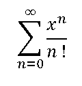
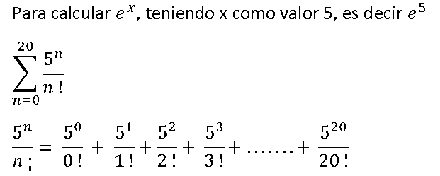
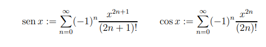

Bloques de código y estructuras de control
Bloques de Código
En Python no existen inicios o finales explícitos para sus comandos u ordenes, tampoco se utilizan llaves con las que delimitar donde empieza o termina el código que forma parte de un comando u orden. Los únicos delimitadores existentes son dos puntos ( : ) y la indentación ("sangrado") del código.
Una indentación o sangrado de 4 ( cuatro ) espacios en blanco, antecedido por dos puntos ( : ) indicará que las instrucciones indentadas o sangradas, forman parte de una misma estructura de control. En el siguiente código tenemos un condicional if. Justo después tenemos un print() identado con cuatro espacios. Por lo tanto, todo lo que tenga esa identación pertenecerá al bloque del if.
if True:
print("True")
Codicional If
La forma más simple de un estamento condicional es un if (del inglés si) seguido de la condición a evaluar, dos puntos (:) y en la siguiente línea e indentado, el código a ejecutar en caso de que se cumpla dicha condición.
fav = "mundogeek.net"
# si (if) fav es igual a "mundogeek.net"
if fav == "mundogeek.net":
print ("Tienes buen gusto!")
print ("Gracias")
La intención de código es que los dos print se ejecuten sólo en el caso de que se cumpla condición fav es igual a "mundogeek.net", por lo que inducimos que las intrucciones print "Tienes buen gusto!" y print "Gracias" pertenecen al bloque condicional If.
fav = "mundogeek.net"
if fav == "mundogeek.net":
print ("Tienes buen gusto!")
print ("Gracias")
Para el caso anterior solo escribe el mensaje "Tienes buen gusto!" sí y solo sí se cumnple la condición. Luego cierra el bloque y continua el proceso. Una vez cierra el bloque, entonces escribe "Gracias".
If ... else
si quisiéramos que se ejecutaran unas ciertas órdenes en el caso de que la condición no se cumpliera? Sin duda podríamos añadir otro if que tuviera como condición la negación del primero:
fav = "mundogeek.net"
if fav == "mundogeek.net":
print ("Tienes buen gusto!")
print ("Gracias")
if fav != "mundogeek.net":
print ("Vaya, que lástima")
pero el condicional tiene una segunda construcción mucho más útil:
fav = "mundogeek.net"
if fav == "mundogeek.net":
print ("Tienes buen gusto!")
print ("Gracias")
else:
print ("Vaya, que lástima")
if ... elif ... elif ... else
Todavía queda una construcción más que ver, que es la que hace uso del elif.
numero = int(input("Digite un numero"))
if numero < 0:
print ("Negativo")
elif numero > 0:
print ("Positivo")
else:
print ("Cero")
elif es una contracción de else if, por lo tanto elif numero > 0 puede leerse como "si no, si numero es mayor que 0". Es decir, primero se evalúa la condición del if. Si es cierta, se ejecuta su código y se continúa ejecutando el código posterior al condicional; si no se cumple, se evalúa la condición del elif. Si se cumple la condición del elif se ejecuta su código y se continua ejecutando el código posterior al condicional; si no se cumple y hay más de un elif se continúa con el siguiente en orden de aparición. Si no se cumple la condición del if ni de ninguno de los elif, se ejecuta el código del else.
ejemplo:
edad = int(input("Ingrese la edad > "))
if(edad < 18):
print("Es menor de edad")
elif(edad >=18 and edad < 60):
print("Es mayor de edad")
elif(edad >= 60):
print("Es adulto mayor")
Controlando los errores
Contiamente los programadores nos exponemos a errores que pueden ser procados por calculos de operaciones como por ejemplo dividir por cero, raiz cuadrada de un mero negativo, entre otros. Pero también surgen errores provocados por el usuario como por ejemplo:
numero = int(input("Digite un numero"))
En esta instrucción el usuario digita uno o carios caracteres, y luego que presiona la tecla Enter,Python tratará de convertir ese o esos caracteres en un número. Pero si el usuario ingresa letras o simbolos no será posible generando error y abortando la operación de traducir y ejecutar el código correspondiente.
Este aspecto se puede controlar con la instrucción
try:
...
...
except:
...
...
En el caso de nuestro ejemplo, lo podemos implementar de la siguiente manera:
try:
numero = int(input("Digite un numero"))
if numero < 0:
print ("Negativo")
elif numero > 0:
print ("Positivo")
else:
print ("Cero")
except:
print("Ingrese un numero ... ! ")
A if C else B
También existe una construcción similar al operador ? de otros lenguajes, que no es más que una forma compacta de expresar un if else. En esta construcción se evalúa el predicado C y se devuelve A si se cumple o B si no se cumple: A if C else B. Veamos un ejemplo:
num = int(input("Digite un numero"))
var = "par" if (num % 2 == 0) else "impar"
Y eso es todo. Si conocéis otros lenguajes de programación puede que esperarais que os hablara ahora del switch, pero en Python no existe esta construcción, que podría emularse con un simple diccionario, así que pasemos directamente a los bucles.
Actividad 1
Leer tres numeros (a, b, c). Y ordenelo en forma descendente, es decir de mayor a menor. Favor controlar errores.
Bucles
Mientras que los condicionales nos permiten ejecutar distintos fragmentos de código dependiendo de ciertas condiciones, los bucles nos permiten ejecutar un mismo fragmento de código un cierto número de veces, mientras se cumpla una determinada condición.
while
El bucle while (mientras) ejecuta un fragmento de código mientras se cumpla una condición.
edad = 0
while edad < 18:
edad = edad + 1
print (f"Felicidades, tienes {edad} años")
La variable edad comienza valiendo 0. Como la condición de que edad es menor que 18 es cierta (0 es menor que 18), se entra en el bucle. Se aumenta edad en 1 y se imprime el mensaje informando de que el usuario ha cumplido un año.
Ahora se vuelve a evaluar la condición, y 1 sigue siendo menor que 18, por lo que se vuelve a ejecutar el código que aumenta la edad en un año e imprime la edad en la pantalla. El bucle continuará ejecutándose hasta que edad sea igual a 18, momento en el cual la condición dejará de cumplirse y el programa continuaría ejecutando las instrucciones siguientes al bucle.
Ahora imaginemos que se nos olvidara escribir la instrucción que aumenta la edad, es decir edad = edad + 1. En ese caso nunca se llegaría a la condición de que edad fuese igual o mayor que 18, siempre sería 0, y el bucle continuaría indefinidamente escribiendo en pantalla Has cumplido 0.
Esto es lo que se conoce como un bucle infinito.
Actividad 5
En el ejemplo anteror, notese que cuando la variable edad tiene el valor de uno (1); en el mensaje aparecerá 1 años en plural, lo cual no es valido porque debería ser en singular, es decir 1 año.
Implemente este caso para que aprezca en forma correcta.
Otras Consideraciones del bucle While
Sin embargo hay situaciones en las que un bucle infinito es útil. Por ejemplo, veamos un pequeño programa que repite todo lo que el usuario diga hasta que escriba adios.
while True:
entrada = input("Ingrese una frase > ")
if entrada == "salir":
break
else:
print (entrada)
En el ejemplo anterior provo un ciclo infinito, es decir mostrará infinitas veces ingresese una frase y la muestra, hasta que la frase sea igual a salir, en este caso se ejecuta la instrucción break, que provoca una ruptura del ciclo o bucle, saliendose del proceso y termnina el programa.
Este bucle se podría haber escrito también, no obstante, de la siguiente forma:
salir = False
while not salir:
entrada = input("Ingrese una frase > ")
if entrada == "salir":
salir = True
else:
print (entrada)
En este caso rompemos el bucle cambiando el valor de la variable salir en True y como no se cumple la condición not salir, es decir que si la variable es falsa, como su valor es True, entonces no entraría al ciclo.
for ... in
En Python for se utiliza como una forma genérica de iterar sobre una secuencia. Y como tal intenta facilitar su uso para este fin.
Este es el aspecto de un bucle for en Python:
secuencia = ["uno", "dos", "tres"]
for elemento in secuencia:
print (elemento)
Aunque todavía no hemos visto colecciones o arreglos, imagine que la variable secuencia tiene una coleccion de cadenas ("uno", "dos',"tres". y luego el ciclo for recorre todos los elementos de esa collección y los muestra mediante print(elemento).
No es necesario conocer el numero de elementos de elentos porque Python conoce el arreglo, por tanto sabe cuantos elementos tiene.
En el lenguaje c, c++ o c#, entre otros quedaría de la siguiente manera:
int mi_array[] = {1, 2, 3, 4, 5};
int i;
for(i = 0; i < 5; i++) {
printf(“%d\n”, mi_array[i]);
}
Es decir, tendríamos un bucle for que fuera aumentando una variable i en cada iteración, desde 0 al tamaño de la secuencia, y utilizaríamos esta variable a modo de índice para obtener cada elemento e imprimirlo, observando que el enfoque de Python es más natural e intuitivo.
for ... in range(x)
La función range() devuelve una secuencia de números, comenzando desde 0 de forma predeterminada, se incrementa en 1 (de forma predeterminada) y termina en un número específico. Ejemplo:
for x in range(6):
print(x)
Mostrará los numeros 0, 1, 2, ... 5
Tenga en cuenta que range(6) no son los valores de 0 a 6, sino los valores de 0 a 5.
Usando el Parámetro Inicio
for x in range(2, 6):
print(x)
Mostrará los numeros 2, 3, 4, 5
Tenga en cuenta que range(6) no son los valores de 0 a 6, sino los valores de 0 a 5.
La función range() por defecto incrementa la secuencia en 1, sin embargo, es posible especificar el valor del incremento agregando un tercer parámetro: range(2, 10, 3) .
Ejemplo:
for x in range(4, 12, 2):
print(x)
Mostrará los numeros: 4, 6, 8, .... 10
Incrementa de 2 en 2 hasta los números \< 12. sin incluir el 12
También puedo utilizarlo de la siguiente manera:
for x in range(2, 6):
print(x)
else:
print("La secuencia ha terminado")
Mostrará los numeros 2, 3, 4, 5 y luego aparece en pantalla "La Secuencia ha terminado"
Actividad 3
Realice los siguientes programas
-
Leer un numero entero positivo y calcular su Factorial. Ej
Fact(5) = 5 x 4 x 3 x 2 x 1
Fact(5) = 120
-
Calcular la serie de Taylor de e levado a x con centro cero:

El símbolo sumatoria significa sumas sucesivas acumulando el valor anterior. Ej.

-
Calcular las siguientes series:

- Leer un número entero x y devolver su equivalente en número binario